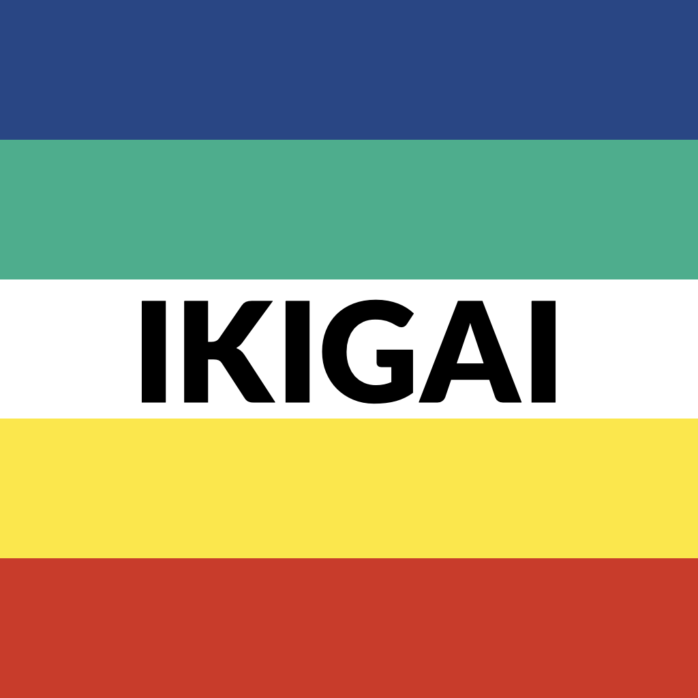

IKIGAI
"Ikigai" (生き甲斐) is a Japanese concept that combines the words "iki" (生き), meaning "life," and "kai" (甲斐), which roughly translates to "worth" or "the realization of what one hopes for." Together, they imply a reason for being, or a deep sense of purpose that gives one's life value. The concept is often associated with having a direction or a motivation to get up in the morning, something that brings satisfaction and meaning to life. Originating from Japanese culture, Ikigai is not just about achieving big goals or milestones; it also encompasses the small joys and daily routines that contribute to overall happiness and a sense of fulfillment. This philosophy encourages individuals to find balance among various aspects of life, including what they love, what they are good at, what the world needs, and what they can be compensated for. These intersecting elements help individuals discover their Ikigai, leading to a richer, more fulfilled existence. Ikigai is more than just a career or hobby; it's often seen as a balance between spiritual and practical aspects of life. It integrates a sense of community, mindfulness, and gratitude, all of which are pivotal in leading a meaningful life according to this philosophy. The concept has gained international interest, particularly among those seeking a more integrated approach to personal and professional fulfillment.
Coming in fall 2024...